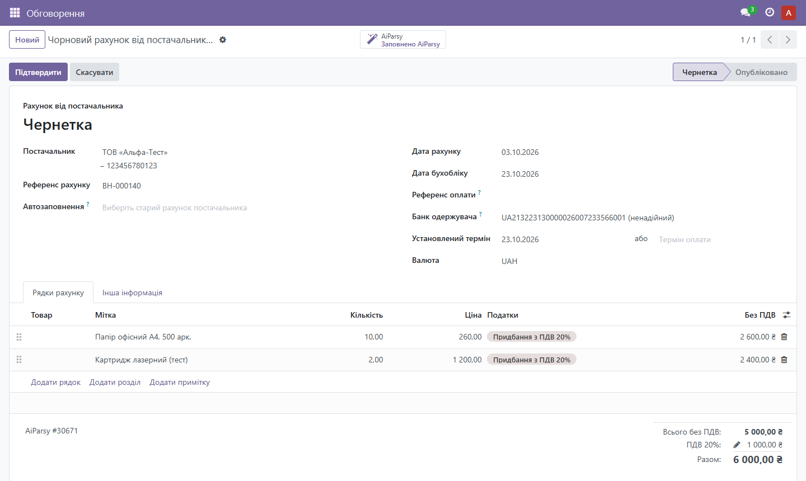
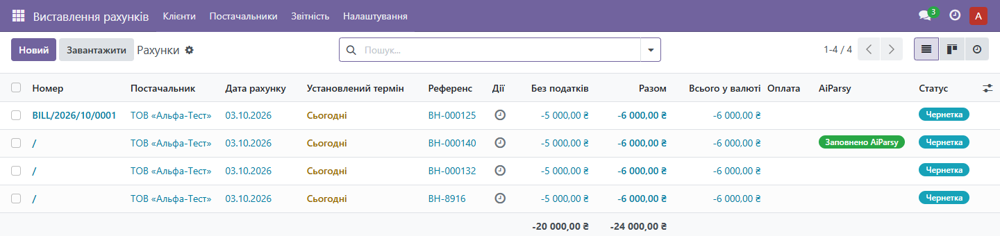
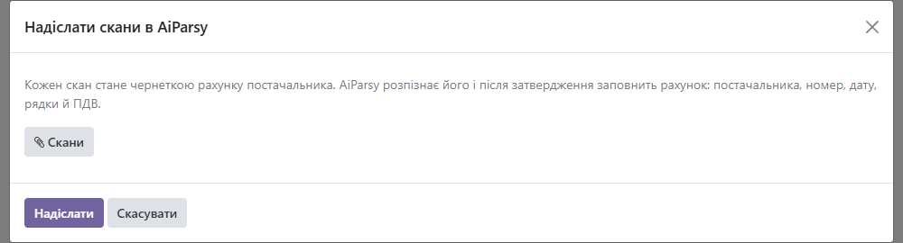
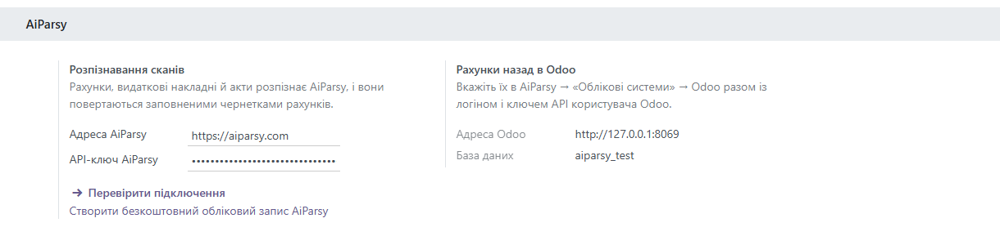

Each bill shows its AiParsy status: recognizing, recognized, approved, filled. A scheduled action refreshes the statuses every 10 minutes; the AiParsy button opens the document in AiParsy.




Recognition uses the pages of your AiParsy plan. AiParsy needs to reach your Odoo over the internet to fill the bills (Odoo.sh or your own server with a public address). Step-by-step guide: aiparsy.com/blog/odoo.
Модуль надсилає скани видаткових накладних, актів і рахунків постачальників в AiParsy. Після розпізнавання й затвердження AiParsy заповнює чернетку рахунку в Odoo: постачальника за ЄДРПОУ, номер і дату, рядки з цінами без ПДВ і податок потрібної ставки. Інтерфейс модуля перекладено українською.
Інструкція з підключення: aiparsy.com/blog/odoo.